Contents
Installation
UPM can installed from the Android Market.
Creating a New Database
The first time you start UPM (or after deleting your database) you'll be presented with the New Database screen.
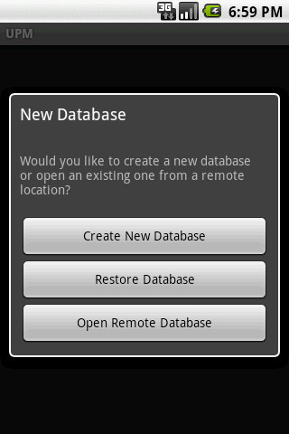
Click on Create New Database. (Restore Database is described in Restore. Open Remote Database is described in Database Sharing).
The next screen will ask for the master password you'd like to use to encrypt your password database. Choose this password carefully. It should be memorable but obviously not so memorable that someone could guess it. If you forget this password there's absolutely no way of opening your database. UPM uses the most seucre encryption available, AES.
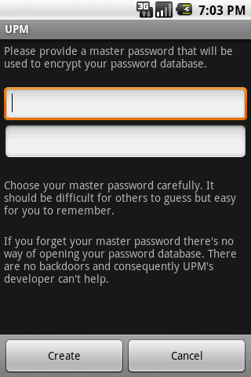
Having entered your master password click on the Create. You'll then be presented with the accounts screen which at this point will be empty.
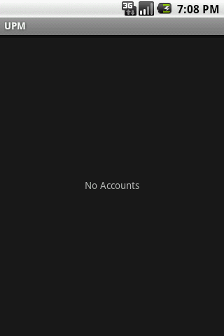
Adding an Account
From the accounts screen click Menu -> Add.
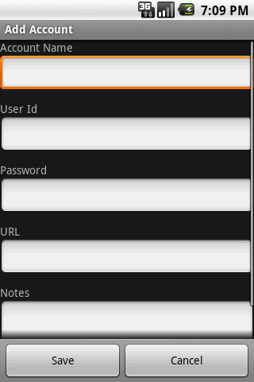
- Account Name: The name of the account as it will appear in the accounts screen
- User Id: The user id associated with this new account
- Password: The password associated with this account
- URL: For accounts associted with websites
- Notes: A free text area
Click Save after entering all the account details.
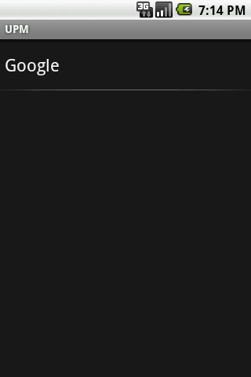
Opening an Account
To open an account simply select the account name on the Accounts screen.
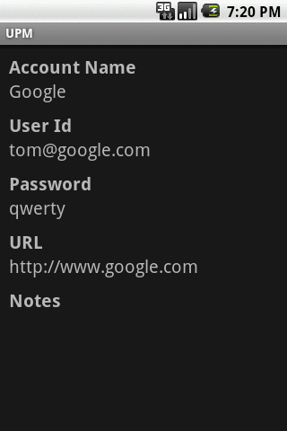
Editing an Account
There are two ways of editing an account.
Option 1
- Open the account by selecting it on the accounts screen.
- On the Account Details screen select Menu -> Edit
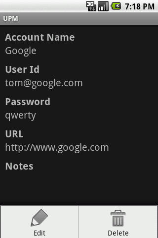
Option 2
- Long click the account on the accounts screen.
- Select Edit Account.
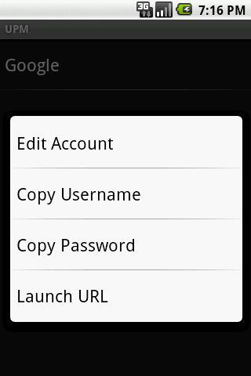
Regardless of how you open it the Edit screen looks like this,
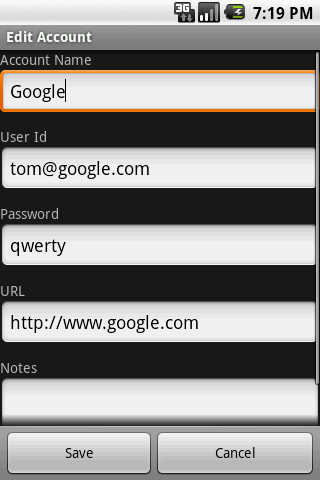
When you're finished editing click Save.
Deleting an Account
- Open the account from the Acccount list screen
- Select Menu -> Delete
- Select Yes to confirm deletion
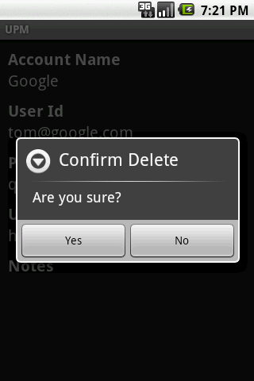
Database Sharing
See Database Sharing for an overview of this feature and instructions on how to setup your server.
At the outset, there are generally two scenarios you can find yourself in terms of syncing. The first is where you have a password database on your android device that you'd like to upload to your server and make available for syncing to other devices. The second is where there's a password database already on your server and you'd like to sync it to your device.
1. Uploading a database
- Select Menu -> Preferences
- Select URL, enter the URL where you placed the UPM server files, e.g. https://www.mydomain.co/upm and select OK
- If the server location is protected with Basic Authentication then you'll need to provide a username and password. If you haven't already done so add an account with the required username and password. Come back to Preferences, select HTTP Authentication Account and select the appropiate account.
- If the URL you're storing your database at uses HTTPS you may recieve this error when you try and sync, "javax.net.ssl.SSLException: Not trusted server certificate". If so then see the section How to Add a Trusted HTTPS Certificate.
2. Downloading a database
- Select Menu -> Preferences
- The option to download a remote database is available on the same screen from where you create a new database. If you've already got a database you'll need to delete it (Menu -> More -> Delete Database).
- Select Open Remote Database on the New Database screen.
- Enter the full URL to your database, e.g. https://www.mydomain.com/upm/upm.db
- If the URL uses Basic Authentication enter the User Id and Password.
- Click Download
- If the database is successfully downloaded you'll be presented with the Enter Master Password screen.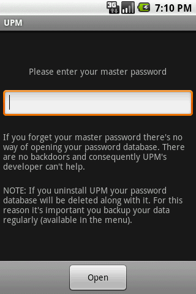
Backup
UPM stores your password database in an area that's inaccessible to other applications. It's referred to as Internal Storage. As a consequence, if UPM is uninstalled or your phone is reset your password database will be deleted. For this reason it's extremely important that you backup regularly.
- Open your database
- Select Menu -> More -> Backup
Your database will be copied to your SD card with the name upm.db.
Restore
If you've just installed UPM and haven't created a database yet you can restore a version that you backed up previously. On the New Database screen select Remote Database. This will restore the database named upm.db from your SD card.
If you've already got a database open you can restore a previously backed up version. This will replace the currently open database with the database named upm.db on your SD card. Select Menu -> More -> Restore.
Preferences
- URL: The URL where you're sycing your database.
- HTTP Authentication Account: The account providing the username and password need to access the URL used for syncing. See Database Sharing.
- Trusted Hostname: Name of the host where you sync your database. This is only required if your use HTTPS and the certificate doesn't have your hostname in the Common Name. See How to Add a Trusted HTTPS Certificate.
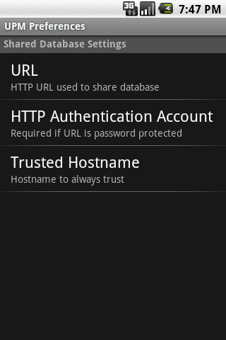
How to Add a Trusted HTTPS Certificate
If you use a HTTPS URL for your remote database and the server is using a self signed certificate you may get this error when you attempt to sync, javax.net.ssl.SSLException: Not trusted server certificate. What you need to do is import the server's certificate into UPM so that it knows it can be trusted. Here's how.
-
The certificate can be easily retrieved using your browser. These steps will work for Firefox. It should be similarly easy using any other browser.
- Vist the URL in your browser. Be sure to use HTTPS, e.g. https://www.17od.com
- Select Tools -> Page Info -> Security
- Click View Certificate
- Go to the Details tab
- Click Export - save the file with the name upm.cer
- Connect your handset to your computer and mount the SD card
- Copy the file upm.cer to the root directory of your SD card. UPM will look in the root of your SD card for a file with this name.
- Start UPM
- Select Menu -> More -> Import Certificate. You should see the message Certificate Imported
- If the certificate was automatically generated for you by your hosting provider then it's likely that it won't have your website URL as the Common Name (it'll probably be some generic name shared by all domains hosted on that server). Android will reject the certificate on that basis. To get around this select Menu -> Preferences -> Trusted Hostname and enter your webserver hostname, e.g. www.17od.com. This tells UPM to trust that hostname.
Extract a copy of your password database from an Android device
The Backup menu option will copy your password database to your device's SD card. You should do this on a regular basis in case your phone becomes inoperable.
If it happens that you can't access UPM for some reason and you don't have a backup of your database all is not lost. It's still possible to extract the database using adb, one of the Android developer tools.
- Install adb. Try this guide
- If you haven't already done so connect your phone to your PC using your USB cable
- Open a command line and execute 'adb pull /data/data/com.u17od.upm/files/upm.db'
You should now have the file upm.db on your PC. This is the encrypted UPM database containing all your usernames and passwords. You can open it using the desktop version of UPM and/or use the Restore menu option using UPM for Android.